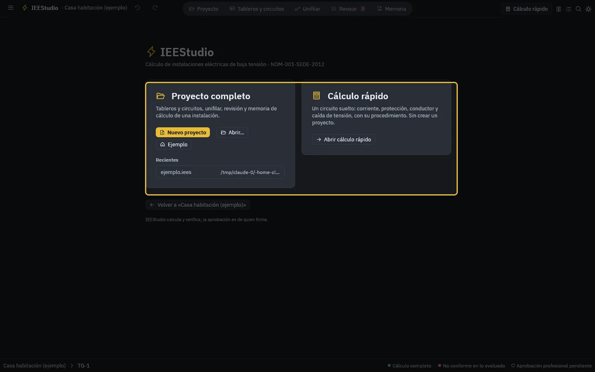
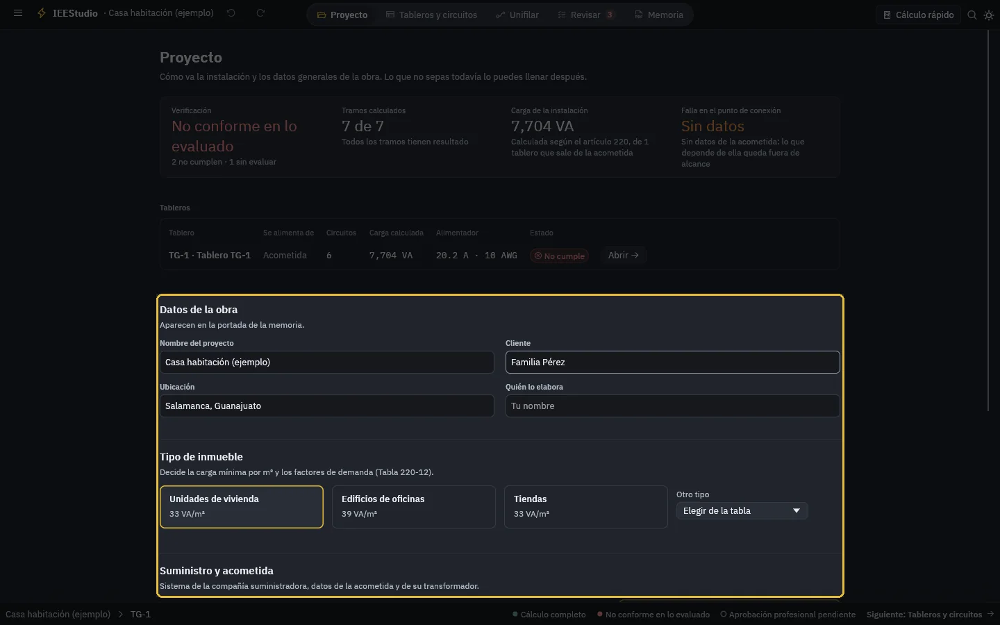
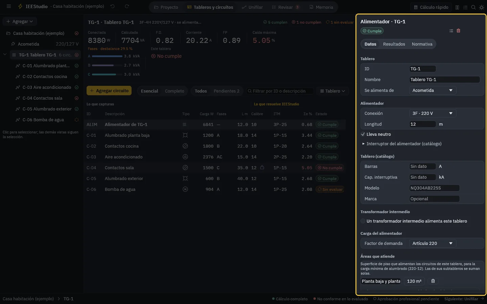
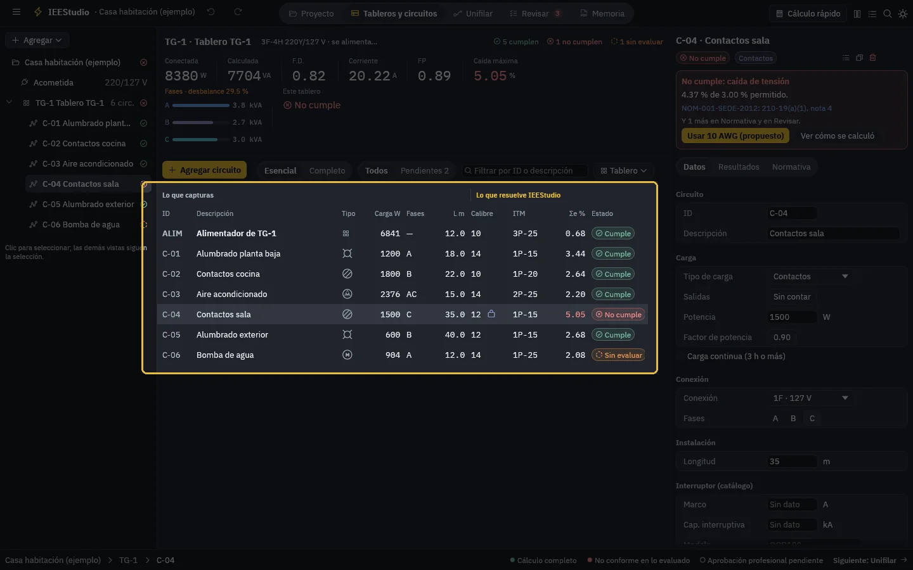
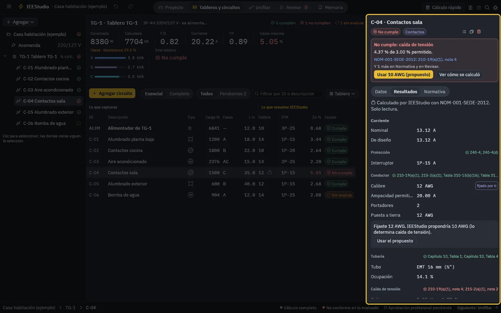
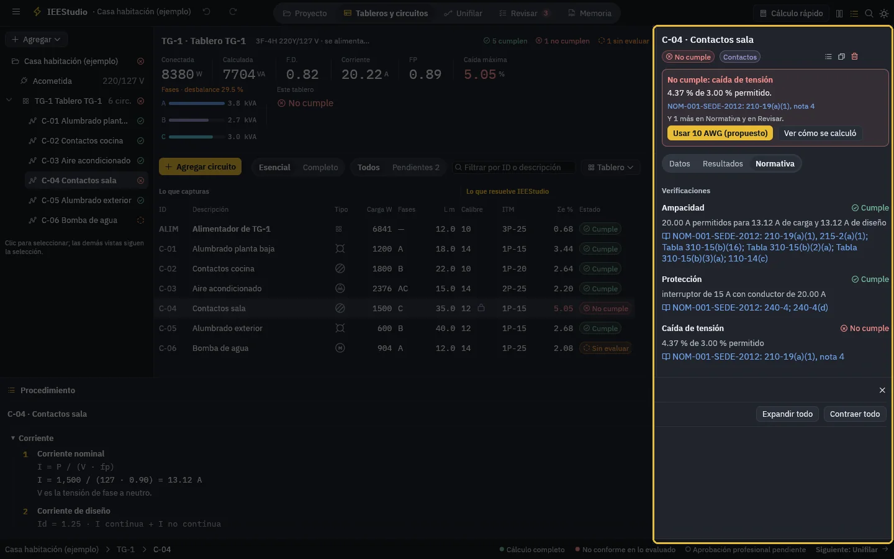
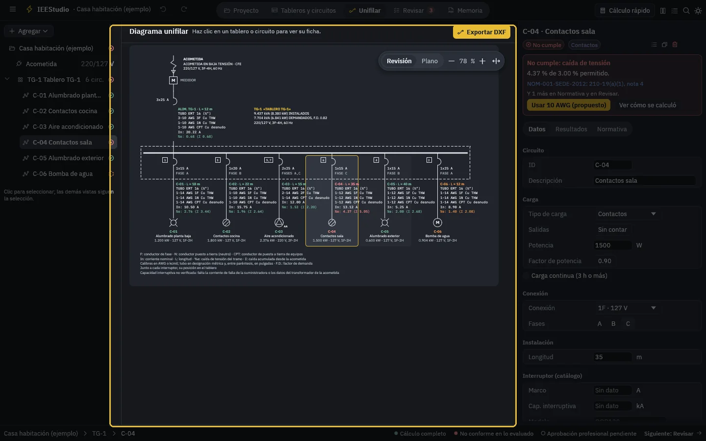
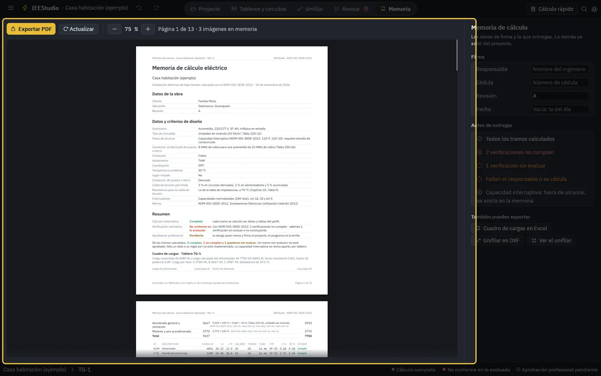
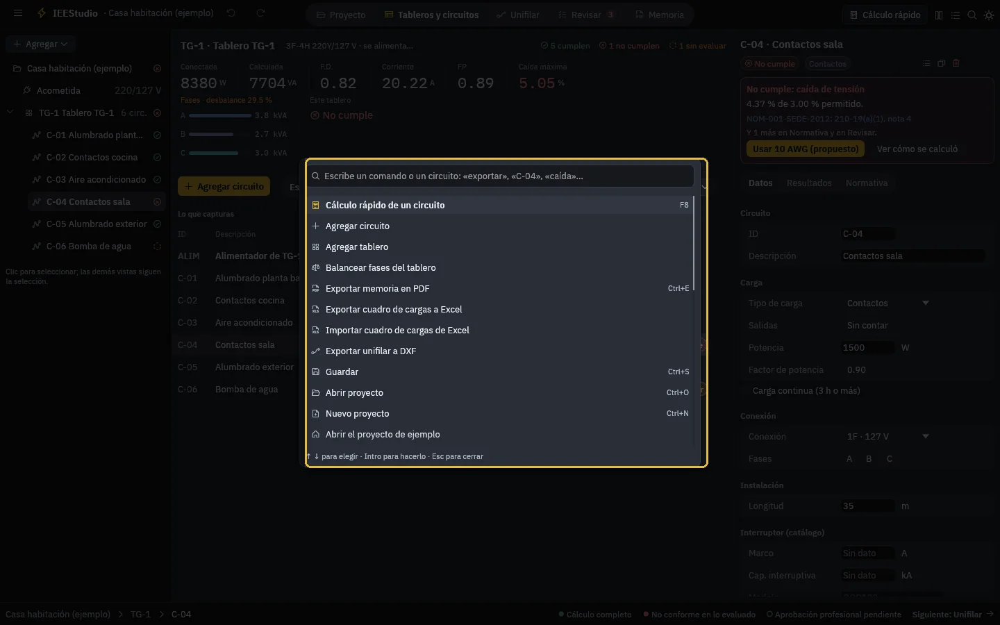
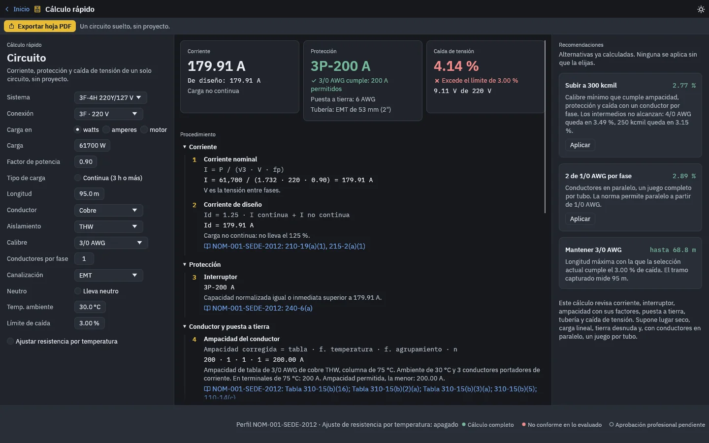

Documentación
Un proyecto completo, paso a paso.
Mira el recorrido en video o sigue los pasos con la app abierta. Todo lo que ves aquí funciona igual en el navegador y en Windows.
Narración con voz sintética y subtítulos en español. El video se grabó con una versión anterior de la interfaz; los pasos de abajo muestran la actual.
De la acometida a la memoria.
Abre IEEStudio
Al abrir eliges entre dos experiencias: Proyecto completo —uno nuevo, uno que ya tienes o el ejemplo, una casa habitación con un tablero y seis circuitos— y Cálculo rápido, para un circuito suelto sin crear un proyecto.
- Arriba están las cinco vistas: Proyecto, Tableros y circuitos, Unifilar, Revisar y Memoria (F2 a F6).
- Lo que eliges en una vista lo siguen las demás.

Datos de la obra y la acometida
En la vista Proyecto capturas el cliente, la ubicación, quién elabora, el tipo de inmueble y el suministro. Arriba, el resumen dice cómo va el proyecto.
- Los datos de la obra van a la portada de la memoria; no cambian el cálculo.
- Los límites de caída de tensión se ajustan aquí.

Tableros y carga del alimentador
En Tableros y circuitos elige un tablero: en su ficha, a la derecha, capturas de dónde se alimenta, su conexión, la longitud del alimentador y las áreas que atiende. Con eso se calcula la carga según el artículo 220, con el detalle de cada grupo en el procedimiento.
- Si el tablero se alimenta por un transformador, márcalo y captura sus datos.
- Las áreas definen la carga mínima de alumbrado (Tabla 220-12).

Circuitos en el cuadro de cargas
Con «Agregar circuito» eliges qué vas a conectar y capturas su potencia, fases y longitud en la ficha. El cuadro de cargas se recalcula con cada cambio: corriente, calibre, tierra, tubo, interruptor, caída de tensión y estado.
- Ctrl+D duplica el circuito seleccionado y Supr lo elimina.
- «Esencial» y «Completo» cambian las columnas del cuadro.
- «Balancear fases» reparte los circuitos entre A, B y C.

Revisa los resultados
En la ficha, la pestaña Resultados muestra lo que calculó el programa para el elemento elegido. Si algo no cumple, arriba de la ficha está el arreglo, como «Usar 10 AWG»; si fijaste un calibre o un interruptor, te dice qué habría propuesto y por qué.
- Puedes fijar calibre, interruptor y conductores por fase, o dejar que IEEStudio proponga el menor que cumple.

Revisa la normativa
La pestaña Normativa lista cada verificación —ampacidad, protección, caída, tubería— con su estado y el artículo que aplica. La vista Revisar junta todo lo que falta del proyecto, con su arreglo; lo que la norma pide y el programa no verifica aparece como fuera de alcance.
- El procedimiento (F7) muestra abajo la fórmula y los valores de cada paso.

El diagrama unifilar
La vista Unifilar muestra el diagrama dibujado a partir del proyecto; se acerca con Ctrl y la rueda o pellizcando, y se recorre arrastrando. No se dibuja a mano: cualquier cambio en el cuadro de cargas se refleja aquí.
- «Exportar DXF», para seguir en AutoCAD.

La memoria de cálculo
La vista Memoria muestra la vista previa con los datos de la obra, el cuadro de cargas, el unifilar, las observaciones y el procedimiento. A la derecha capturas la firma y revisas «Antes de entregar». Expórtala a PDF con Ctrl+E.
- Las observaciones listan todo lo que no cumple o no se evaluó.

Guarda y exporta
En Windows, Guardar escribe un archivo .iees en tu carpeta. En el navegador, el proyecto se guarda solo en ese navegador y «Descargar proyecto» te da el .iees para tener tu copia.
- El cuadro de cargas se exporta a Excel y se importa de vuelta.
- Ctrl K busca cualquier comando, tablero o circuito.
- Un .iees abre igual en la app en línea y en la de Windows.


Cálculo rápido de un circuito.
Desde la pantalla de inicio, o con F8 dentro de un proyecto, calculas un circuito suelto: sistema, carga, longitud y conductor. Si no cumple, te da alternativas ya calculadas que aplicas con un clic; su hoja se exporta en PDF, y dentro de un proyecto «Agregar al proyecto» lo pasa al tablero seleccionado.
Atajos de teclado.
| Ctrl N | Nuevo proyecto |
| Ctrl O | Abrir un proyecto (en el navegador, usa Archivo, Abrir) |
| Ctrl S | Guardar; en el navegador, descargar el proyecto |
| Ctrl E | Exportar la memoria en PDF |
| Ctrl Z / Ctrl Y | Deshacer y rehacer |
| Ctrl D | Duplicar el circuito seleccionado |
| Supr | Eliminar el circuito seleccionado |
| Ctrl K | Paleta de comandos: busca cualquier comando, tablero o circuito |
| F2 a F8 | F2 a F6: las vistas Proyecto, Tableros y circuitos, Unifilar, Revisar y Memoria; F7, el procedimiento; F8, el cálculo rápido. En el navegador, F5 recarga la página: usa la barra de vistas. |
Preguntas frecuentes.
¿Cuesta algo?
No. IEEStudio es gratuito y de código abierto, también para uso profesional. No pide cuenta ni registro.
¿Mis proyectos se suben a internet?
No. En la versión en línea todo se calcula en tu navegador y el proyecto se guarda en ese mismo navegador. En Windows se guarda en tus carpetas. Ningún proyecto pasa por un servidor.
¿Si borro los datos del navegador pierdo el proyecto?
El proyecto que tenías abierto, sí. Por eso conviene descargar el .iees de vez en cuando: es tu copia y la puedes abrir en cualquier computadora.
¿La memoria que genera ya está aprobada?
No. IEEStudio verifica contra la norma y lo dice claramente, pero la aprobación la da el ingeniero responsable que revisa y firma. El programa nunca marca un proyecto como aprobado.
¿Qué hago si algo dice «sin evaluar»?
Lee el motivo en la pestaña Normativa o en las observaciones de la memoria: casi siempre falta un dato, como la corriente de placa de un motor. Captúralo y se evalúa.
¿Calcula el cortocircuito?
Revisa la capacidad interruptiva de cada tablero con una falla estimada como cota superior; no es un estudio completo de cortocircuito. La revisión se puede apagar y entonces queda anotada como fuera de alcance.
¿Funciona en el celular?
Sí. En el teléfono la app usa una barra inferior con las cinco vistas, listas que se tocan y la ficha a pantalla completa; en una tableta, el cuadro completo con cajones para el navegador y la ficha. Todavía no se ha probado en un teléfono real con iOS; si algo no responde, repórtalo.
¿Por qué Windows dice «Windows protegió su PC»?
Porque el instalador todavía no tiene firma digital. Elige «Más información» y «Ejecutar de todas formas». La versión en línea no tiene ese aviso.
Encontré un error o me falta algo
Repórtalo en GitHub. Si es un error de cálculo, incluye el archivo .iees o los datos del circuito.
Referencia técnica.
Criterios de cálculo, fuentes y decisiones, en el repositorio.